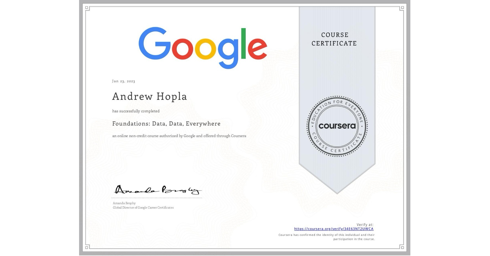

Summary
My interest started in coding when a relative had a medical incident which required a lenghthy recovery.
Her rehabiliatitaion was a manual process and it struck me technology may have been of assistance- that was my spark!
Education
- GCSEs - Various
- BTEC -Business
- Finance & Leasing Association exam
- Prince2 - Foundation
- Google analytics
- ITIl - Foundation
- Comptia 801
Work expereince
I currently work as the Head of IT service delivery for a large health provider in the UK.
Skills
- Organsiational
- Interpersonal & relationship management
- Customer & user centric
- Communication skills
- Networking
Awards
- Google Analytics

Andy Hopla. All rights reserved